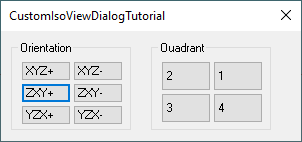

In Tutorial: Introduction to Creating Planes we saw how to create one isometric view. If you think about it, there are really 24 possible isometric views. Any one of the three axes, X, Y, or Z, could be vertical on the screen, with either their + or - end up. That is six combinations. For each of those six, the other two axes could be rotated so that we are looking from one of four possible quadrants. That gives 24 isometric views.
For all of those combinations, we know that the vertical axis will have a vector with components of +/-(-0.57735, -0.57735, 0.57735). The axis which goes from the lower left to the upper right will have components of +/-(0.70711, -0.70711, 0.0), and the axis which goes from lower right to upper left will have a vector with components of +/-(0.40825, 0.40825, 0.8165). Nine vector components for 24 planes is 216 values to get correct. Instead of doing all that work, though, let's go with one set of values and use the Rotate and RotateUVW methods of the plane to get the other combinations.
Arrange the control on the form and align them if you like. When you are finished, your form should look similar to the one below.

Set the properties of each control to the following values:
| Object Type | Name | Properties |
|---|---|---|
| UserForm | frmIsoViewTutorial | Caption = CustomIsoViewDialogTutorial |
| GroupBox/Frame | fraOrientation | Caption = Orientation |
| CheckBox/ToggleButton | tglXYZPlus | Caption = XYZ+ |
| CheckBox/ToggleButton | tglXYZMinus | Caption = XYZ- |
| CheckBox/ToggleButton | tglZXYPlus | Caption = ZXY+ |
| CheckBox/ToggleButton | tglZXYMinus | Caption = ZXY- |
| CheckBox/ToggleButton | tglYZXPlus | Caption = YZX+ |
| CheckBox/ToggleButton | tglYZXMinus | Caption = YZX- |
| GroupBox/Frame | fraQuadrant | Caption = Quadrant |
| CheckBox/ToggleButton | tglQuadrant1 | Caption = 1 |
| CheckBox/ToggleButton | tglQuadrant2 | Caption = 2 |
| CheckBox/ToggleButton | tglQuadrant3 | Caption = 3 |
| CheckBox/ToggleButton | tglQuadrant4 | Caption = 4 |
First create a working plane:
Then assosiate the following event procedures with the form:
Select various combinations of orientation and Quadrant. You should see the UVW work plane change. To get the view to change, you currently must select that View name from the Views pull-down. Note that you may want to draw some geometry or open an existing file to help you visualize the results.